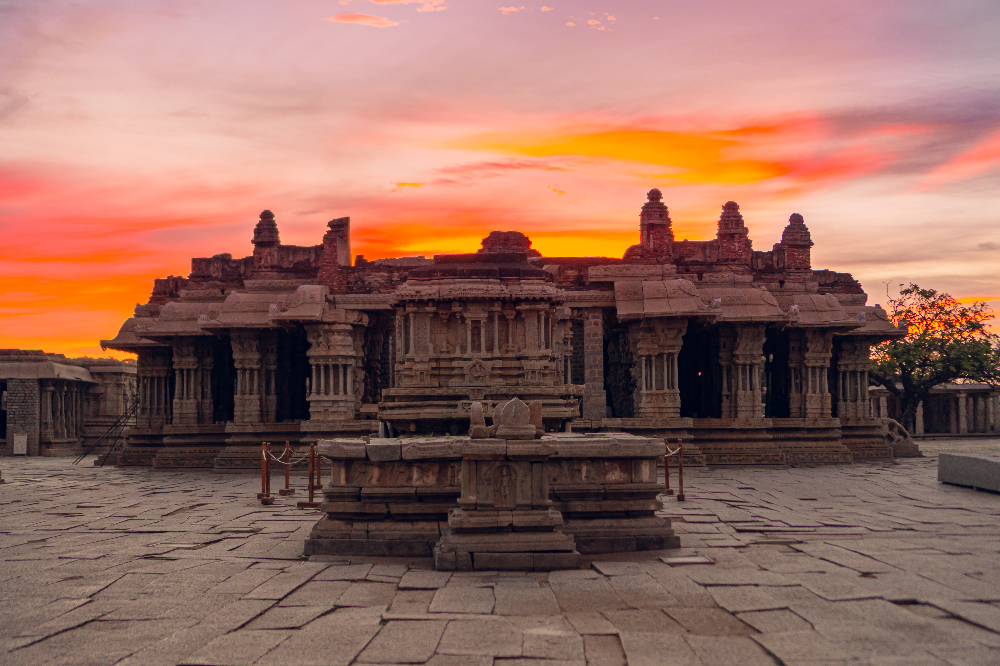
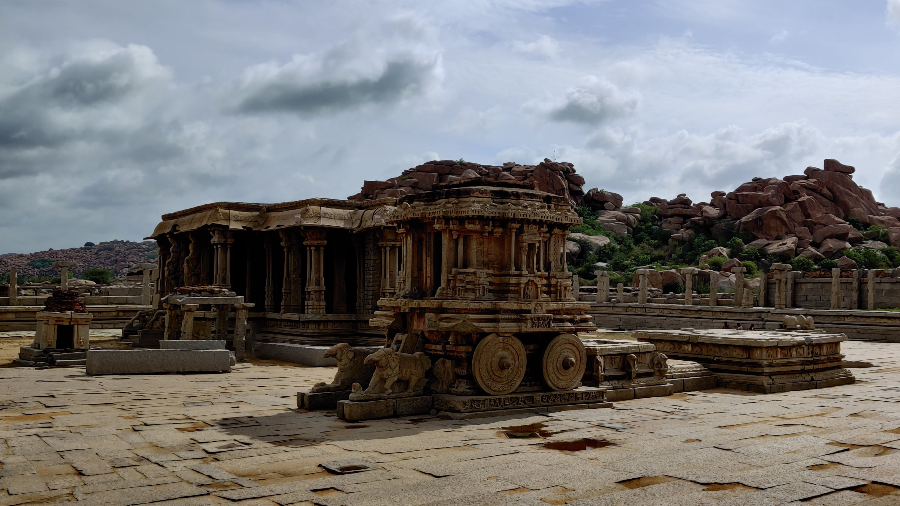

Hampi: The Jewel of India's Heritage
Nestled in the heart of the southern Indian state of Karnataka lies a treasure trove of history, culture,
and architectural marvels - Hampi. This ancient city, now a UNESCO World Heritage Site, is a testament to
the rich heritage of India and a window into its glorious past.
Hampi's history dates back to the 14th century when it served as the capital of the Vijayanagara Empire, one
of the greatest empires in South Indian history. The empire's zenith in the 16th century saw Hampi flourish
as a thriving center of trade, art, and culture. It was a city of grandeur and opulence, with sprawling
palaces, majestic temples, and bustling marketplaces.
The most iconic feature of Hampi is its mesmerizing rock-cut temples and monolithic structures. The
Virupaksha Temple, dedicated to Lord Shiva, is a prime example of Vijayanagara architecture, with its
intricate carvings and towering gopuram (entrance tower). Nearby, the Vittala Temple stands as an
architectural marvel with its famous stone chariot and musical pillars that produce melodious sounds when
struck. These temples are not just religious monuments but also a testament to the artistic prowess of the
Vijayanagara craftsmen.
The boulder-strewn landscape of Hampi is also home to numerous other attractions. The Royal Enclosure, a
fortified area with ornate buildings and the impressive Lotus Mahal, showcases the grandeur of the empire.
The Queen's Bath, an elegant, well-preserved bathing complex, reflects the sophistication of the time.
Hampi's natural beauty is equally enchanting. The Tungabhadra River, which flows through the city, adds to
its picturesque charm. Visitors can take coracle rides on the river, explore the lush banana plantations, or
hike up to Matanga Hill for a panoramic view of the city at sunrise or sunset.
Hampi's charm extends beyond its historical significance. It has become a hub for backpackers and travelers
seeking a unique blend of culture, adventure, and tranquility. The ruins and the rustic landscape provide an
ideal backdrop for exploration, photography, and meditation.
In recent years, efforts have been made to preserve and restore the heritage of Hampi. Archaeological
excavations, conservation projects, and tourism management initiatives have breathed new life into this
ancient city.
In conclusion, Hampi, India, is a living testament to the glorious past of the Vijayanagara Empire and the
enduring spirit of Indian culture and heritage. Its rock-cut temples, royal enclosures, and stunning
landscapes offer a glimpse into a bygone era while attracting modern-day explorers and history enthusiasts.
A visit to Hampi is a journey through time, a fusion of history, spirituality, and natural beauty, making it
an unforgettable destination on India's cultural map.
WIKI